부산여행
정말 떨리는 마음으로 같이 계획하고 갔던 우리의 첫 여행! 거의 2년이나 됐다! 키키
1분 1초가 소중하고 너무너무 시간이 빨리갔었어. 사랑하는 사람과 여행하는 건 정말
좋은 거구나를 많이 느꼈어! 이거 하려고 꼬물꼬물 사진 고르고 옮겨서 저장하고 이름
바꾸고 막 열심히 했어!!ㅎㅅㅎ 아직 꾸미는 건 못배워서 일단 엉성하지만 사진까지
저때 사진 보면 뭔가 어린게 느껴지지 않아?? 우리 나이든게 느껴진다 옛날 사진 보니까
2022.06.30~2022.07.01
 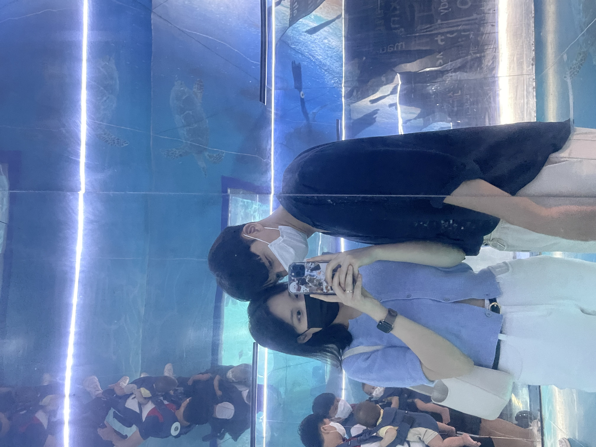
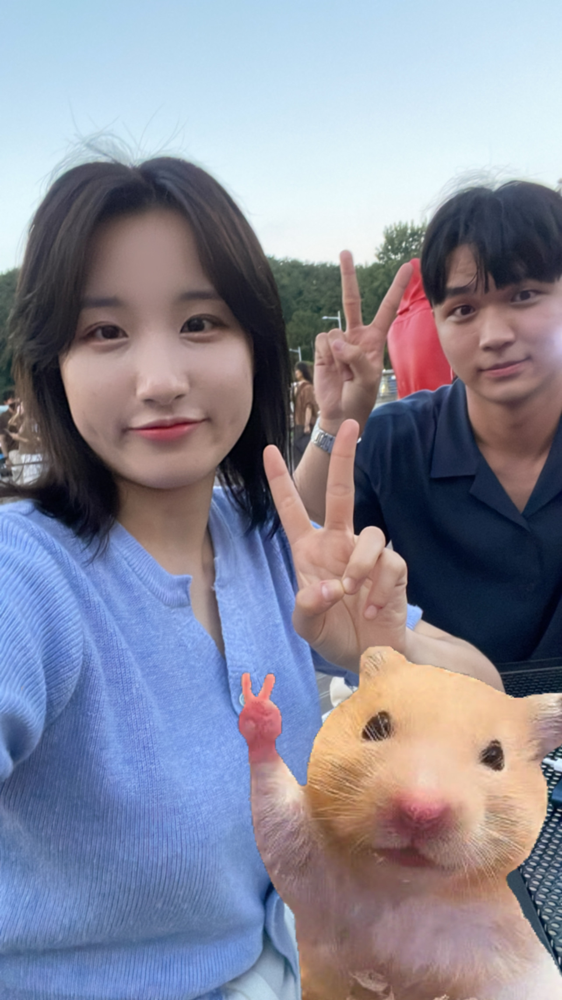
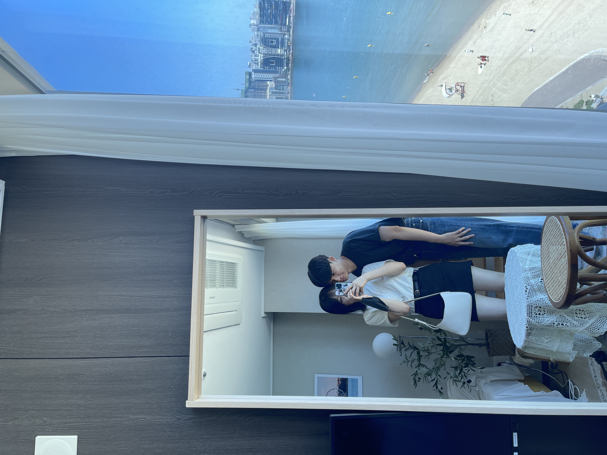
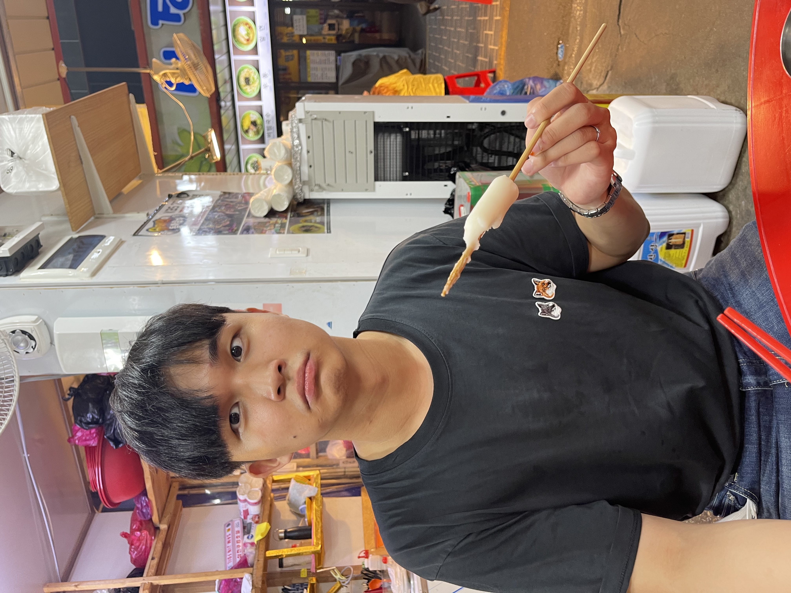
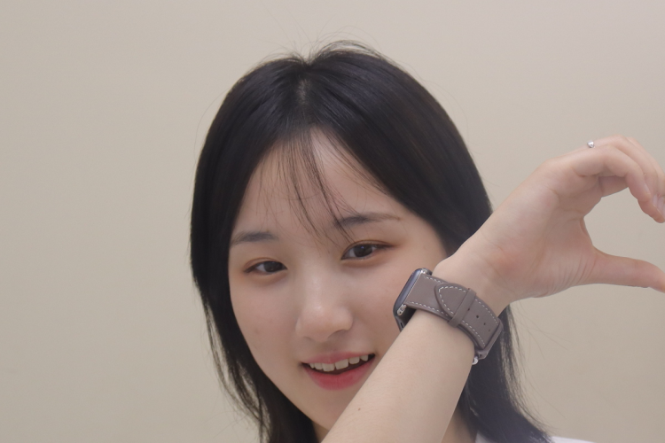
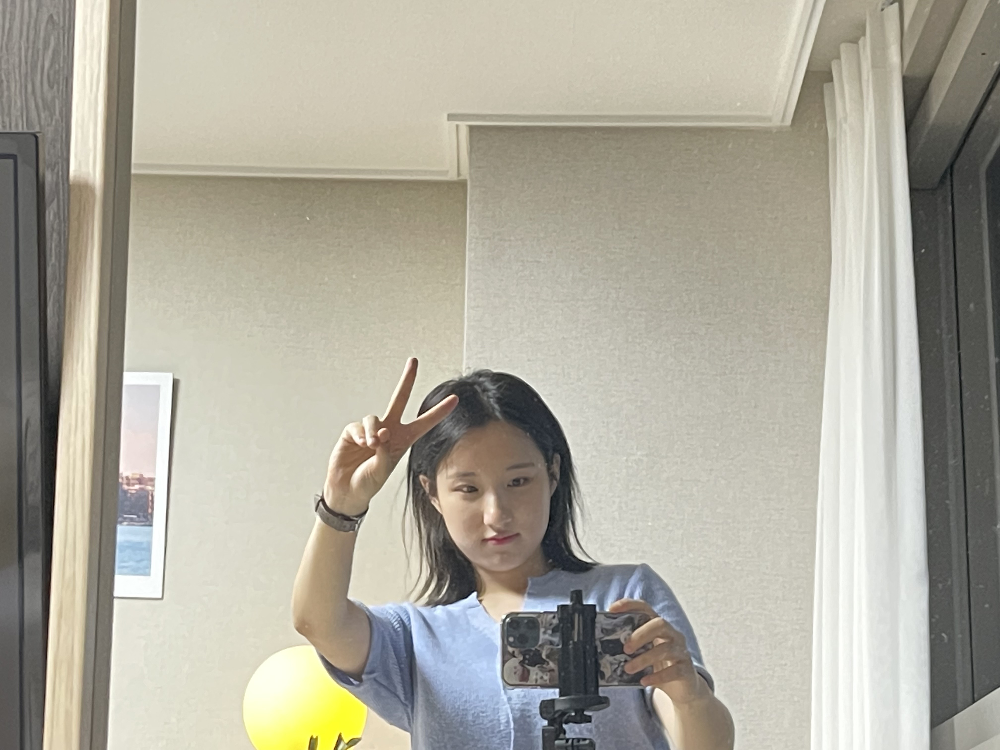
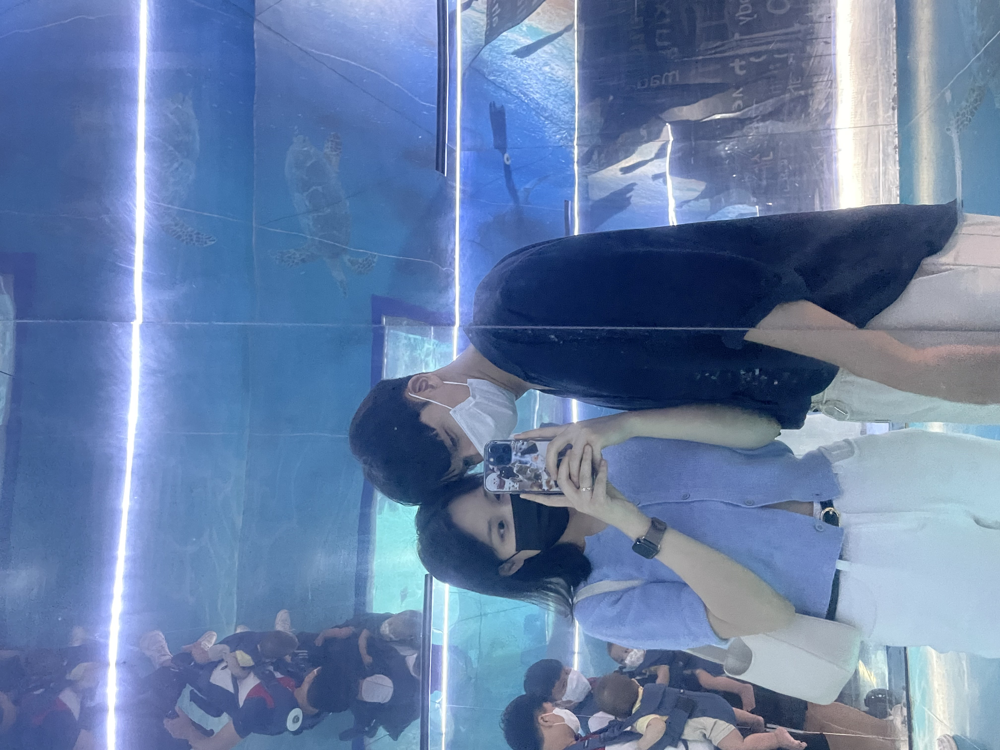
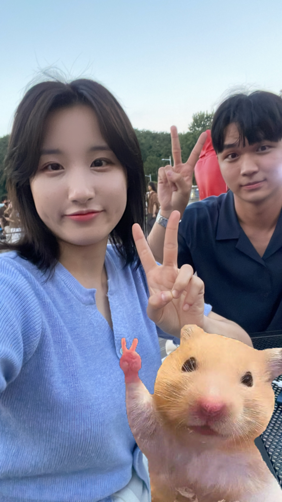
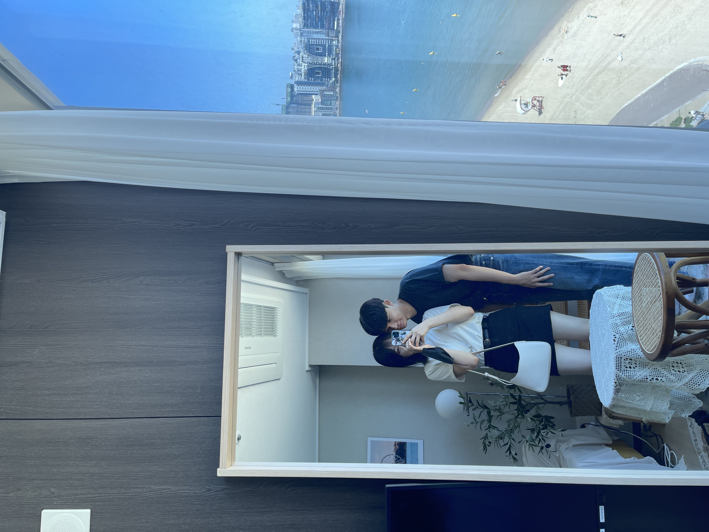
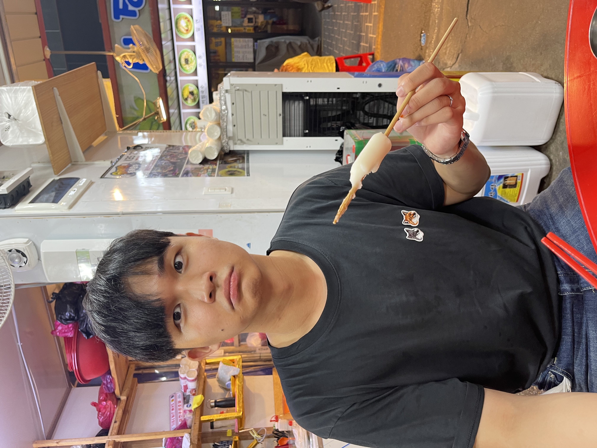
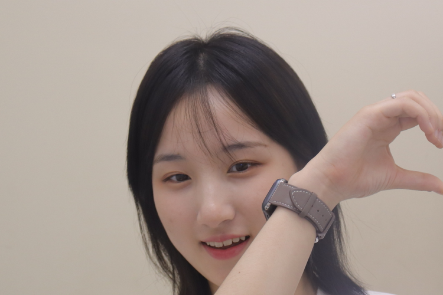
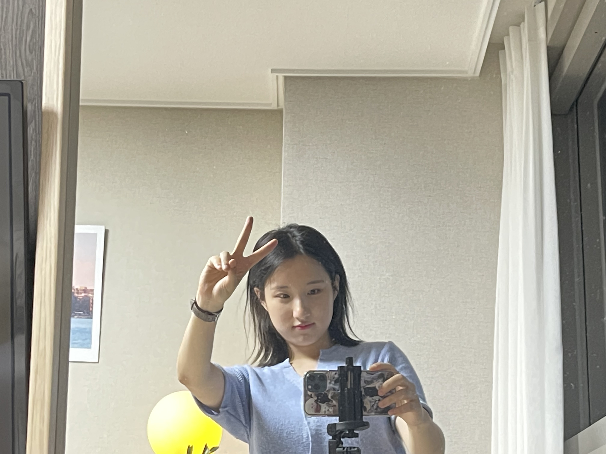